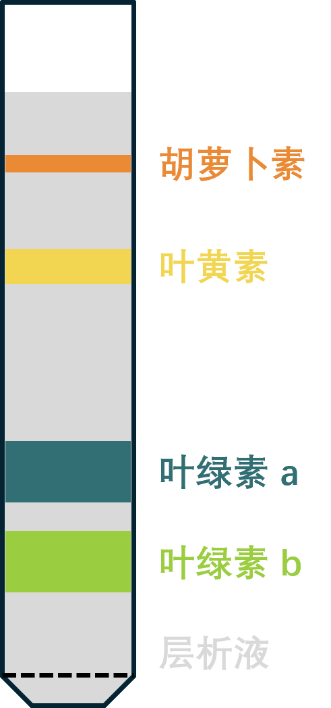

前言
色谱又名层析，主要是用来分离纯化混合物。在开始之前，让我们想想，我们如何分离纯化乙醇和水的混合物？分馏，利用乙醇和水的沸点差异。我们如何纯化水中的溴？萃取，利用溴在不同溶剂中溶解的差异性。不难看出，我们对物质的分离，主要依赖物质的不同性质：沸点差异、溶解度差异。显而易见的是，物质不仅有这些性质，它们还有：带电性质的差异、分子质量的差异、极性差异等等。利用这些性质进行物质分离的重要方法之一就是：色谱（层析）。
同一科学技术的两种名称主要是学界的差异：化学界保留了原词 Chromatography 中 Chroma（色） 的含义，并将分离后按顺序排列的图谱/色带称为 “谱”（类似光谱、声谱）。化学家们后来把这项技术扩展到了无色物质的分离（如气相色谱、液相色谱），但“色谱”这个名字已经沿用下来。即使检测过程根本看不到颜色（比如用质谱或紫外检测器），依然叫色谱。例如气相色谱 (GC)、高效液相色谱 (HPLC)。
生物界更关注它的物理过程和机制。层指样品在固定相和流动相这两相（或不同介质层）之间分布，析指分析、解析、分离。在生物化学和分子生物学中（如分离蛋白质、DNA、氨基酸），大家更习惯叫“层析”，比如：凝胶过滤层析、亲和层析、离子交换层析。

色谱装置分为两相：固定相和流动相，我们不好给它下一个直观的定义，我们通过例子来理解它。如果你学过高中生物，那你应该还记得这个实验：绿叶中色素的提取和分离。我们把提取的叶绿素溶液画到滤纸条上，晾干后将滤纸底部浸入丙酮中，利用不同色素在丙酮中溶解度不同，达到分离的效果（说实话这个实验我还没做成功过）。
在这里面，滤纸我们称为固定相。丙酮我们称为流动相。这么来看，固定相就是不动的，流动相就是流动的。所以，在对任何色谱时，我们一定要搞清楚固定相和流动相分别是什么。
纸色谱与薄层层析（TLC, Thin Layer Chromatography）
我们高中所做的分离叶绿素的方法就是纸层析法，但是，我们如何去量化和评估呢每种物质呢？我们就要引入一个量，这个量计算很简单：样品移动距离除以溶剂移动距离，写成公式就是： $$R_f = \frac{\text{样品中心移动距离}}{\text{溶剂前线移动距离}}$$
$R_f$ 值使得我们能够比较可能进行了不同时长的色谱图。$R_f$ 值全称为 Retention Factor，我们可以叫它滞留因子或者比移值。
比纸层析更精密的“纸”层析是薄层色谱，简称 TLC，原理完全相同，只不过滤纸变成了涂在基质上的薄层氧化铝或者硅胶，基质可以是玻璃、金属或塑料板。氧化铝和硅胶薄膜都都带有羟基基团，因此它们都是极性的，我们可以利用极性性质差异来分离物质。
TLC 固定相我们可以改造，使它们在紫外下能发出荧光，这样如果我们的样品在可见光下看不到，我们就可以关灯，用紫外线使固定相发出荧光，被样品点遮挡的区域会比板子其它部分显得更暗。或者我们也可以染色等其它手段来显色，这个和我们跑核酸的琼脂糖凝胶电泳挺像的。
大部分 TLC 耗材都是可以清洗并重复使用的。显而易见的是，纸层析和 TLC 只能在固定相中分离物质，无法收集分离得到的不同物质，如果我们像分离并收集物质，我们就要改造固定相和流动相。
柱色谱与高效液相色谱（HPLC, High Performance Liquid Chromatography）

对于较大量的样品分离并收集，我们会用柱色谱。这个技术在大学的各种实验课上也做了不少次，分离荧光染料，分离蛋白质我们都用过柱层析。我们会在层析柱末端连接一个类似分光光度计的东西（它们都是依靠朗伯-比尔定律，如果上过大学化学应该不陌生），来实时检测流出组分里物质的含量，最后会得到一个吸光度-时间（或流量）曲线：
这个图是我在实验课上做的，实验课的仪器太古老了，流出液的吸光度还得要自己抄在笔记本上，到时候自己去画曲线，我叫它超低效液相色谱。现在高级仪器都非常高级，连个电脑能持续性绘制整个流程中在不同波长下的吸光度，如果我们能给它加一个压力使流动相快速流动，而不是依靠重力，我们就得到一台非常高级的仪器：高效液相色谱（HPLC, High Performance Liquid Chromatography）。
气相色谱（GC, Gas Chromatography）
气相色谱也可以看作是柱色谱，只不过这个柱子很细且非常长，有些柱子能达到 100 米，盘绕在计算机控制的烘箱内。GC 的固定相依然是柱子，只不过流动相变成了气体。我们会用氩气、氦气或氮气这些惰性气体做流动相。
GC 的样品非常多样化，我们的样品可以是混合气体、挥发性溶液、或挥发性溶液上方的气体等等，但是不管样品是什么，我们首先都要将样品注入样品箱，样品箱可以选配加入温控烘箱的功能，从低到高先给样品做一次分馏再进入柱子，这样分离效果更好（当然你的样品是气体就没什么用）。
参考视频
色谱的基本原理如此简单，但是我们依然能依赖色谱做定性和定量分析。我们可以根据已知物质的出峰时间等构建该物质的指纹峰特征，再对未知样品的峰进行解峰分析来做到定性分析。我们也可以构建样品浓度-峰面积标准曲线来进行样品中具体物质的定量分析。我们还可以和质谱连用来做到更精确的定性定量分析，我们称为色谱-质谱联用，例如气相色谱-质谱（GC-MS），液相色谱-质谱（LC-MS）。
别忘了视频：